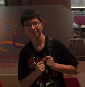

About Me
嘿！欢迎来到卢云骋的小世界！感谢您的光临！
我是一名计算机专业的硕士研究生，目前在东南大学计算机工程与科学学院未来网络研究中心学习。师从李幼平院士(李院士为我国核武器发展做出过突出贡献)，当然我并不研究核武器^_^,我目前的研究方向有：未来网络体系结构、播存双结构网络，推荐系统等(甚至由于项目需要研究过一阵子广播传输、TS流)，现在正为了顺利毕业而努力科研。
My Professional Skills
- 扎实的算法，数据结构，操作系统，计算机网络等专业知识
- 感谢本科的四年，让我发现了自己对于计算机系统、编程的兴趣。我渴望了解计算机内部的秘密，渴望了解程序如何编制和运行，渴望了解如何提高程序的效率。四年充实的学习生活让我对这些知识有了基础性的了解。而研究生阶段一部部经典著作让我对这些方面的认识进一步提高。
- 熟悉C、C++、Python，对Java有基本编程经验。
- 感谢C、C++将我带入编程的殿堂，她们也是我使用最多的语言。尽管STL、泛型编程是那么复杂，但都不能阻挡我爱着C++，毕竟她是我的初恋。Python的语法很美，她让我明白了“人生苦短，我用Python的道理”。Java这么流行，所以我也尝试过一点。
- 熟悉Qt、Django、MFC等常见框架，熟悉基本Linux操作和Git版本控制工具
- 学习的过程是美好的，我总是渴望不断地学习新的东西，看新的书。旁边的豆列列出了我这几年来看过的书(仍在不断更新)。这些框架和工具都带给我过学习的喜悦。(这个网站就是用Git作为版本控制工具的)
- 最后，也是最重要的：我对自己的学习能力非常有信心。能尽快掌握任何需要我掌握的技能。
My Interests and Hobbies
- 体育竞技比赛
- 我是忠实的足球迷，同时也爱观看篮球、网球、羽毛球、乒乓球等体育竞技比赛。这些比赛带给我激情，带给我快乐，也许有时候也会让我失落。而我自己，喜欢跑步，喜欢打乒乓球，羽毛球，有时还玩玩桌球。虽然水平一般，但我享受运动带给我的汗水。
- 读书与音乐
- 我喜欢那种被一本书带进另外一个世界的感觉。除了专业书籍，我喜欢金庸，喜欢红楼梦，喜欢村上春树，我喜欢塞林格，喜欢风之影等等。感谢这些作家无穷的想象力所营造的亦真亦幻的世界。我喜欢摇滚乐、新金属、说唱。也许很多人会觉得他们吵闹，但我喜欢他们带给我生活的节奏感。
- 电影与旅行
- 电影的魅力在于将戏剧性的生活呈现到你的眼前，让你体会现实中不曾有的生活。和读书一样，这需要导游和编剧的想象力和演员的精彩演绎。而旅行可以拓展眼界，可以体验自己小小世界之外的广阔天地。我和朋友们一起去过很多地方，不同的经历，不同的景色，不同的风土人情，都是我们共同的关于青春最美好的回忆。
- 最后，也是最重要的：我爱生活，真的很爱。